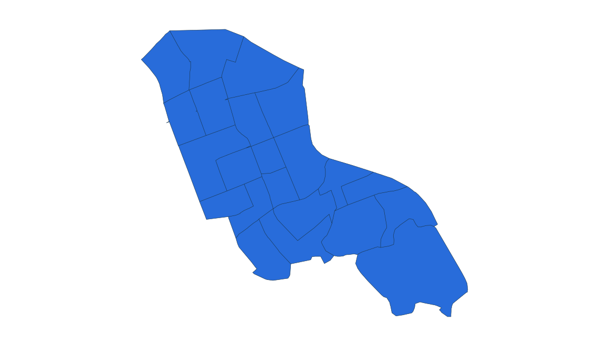
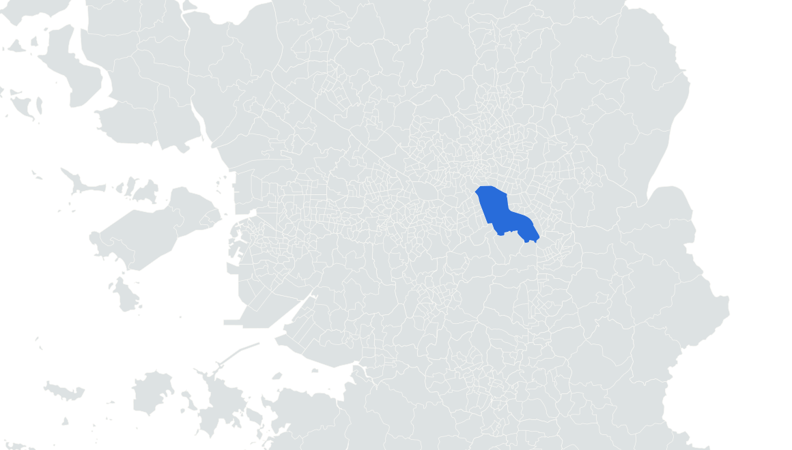

부동산 데이터 | 신혼부부가 사는 곳
6위 서울 강남구
2024.11.1 거주 기준 · 신혼부부 전체 · 단위: 쌍

강남구 양재천 영동4교 인근 수변길
실제 장소 자료사진 · 촬영 2019
사진: 서울특별시(서울경관기록화 사업 2020), 제공: 서울연구원 서울연구데이터서비스 · CC BY 4.0 / 공공누리 제1유형


강남구 경계
2024 통계구역 · 수도권 내 위치
옆 순위와 함께 읽는 거주 규모
6위 서울 강남구
9,321쌍
7위 서울 강동구
9,287쌍
0
8,000
16,000쌍
강동구보다 34쌍 많음
앞뒤 순위 · 같은 0–16,000쌍 척도
04
???
???
05
???
???
06
강남구
9,321
07
강동구
9,287
08
영등포구
9,036
2023 → 2024
+798쌍
9.4% 증가
강동구 -4.1%
통계: 통계청 「2023·2024년 신혼부부통계」 수도권 구별 집계 | 지도: SGIS · vuski/admdongkor, CC BY 4.0 · 2024 경계